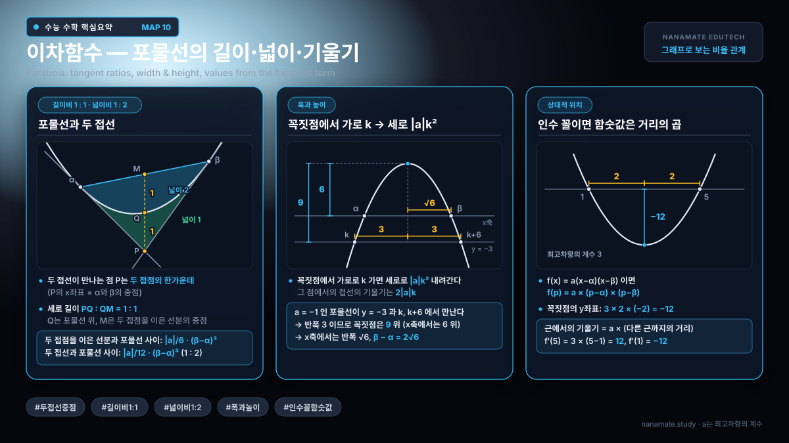
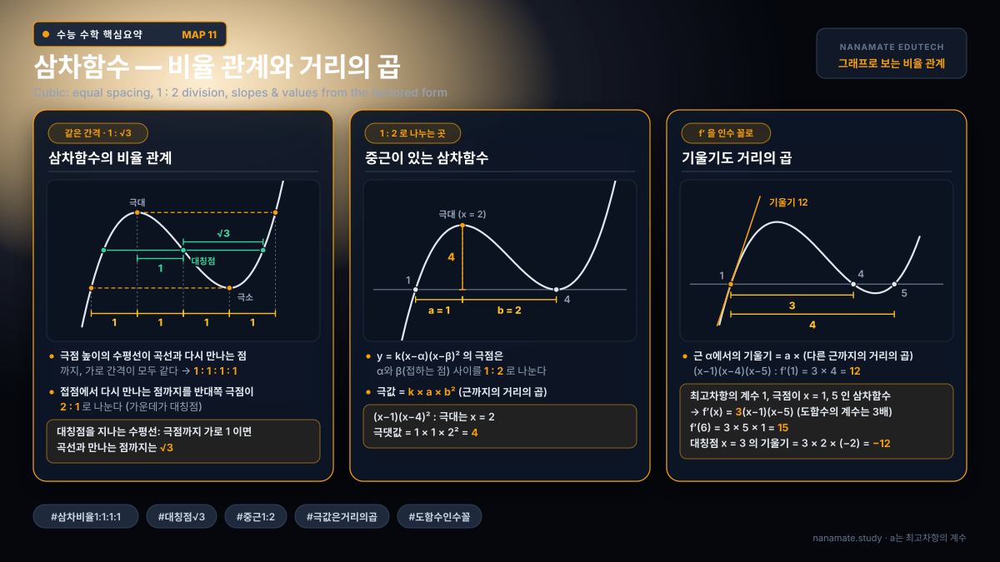
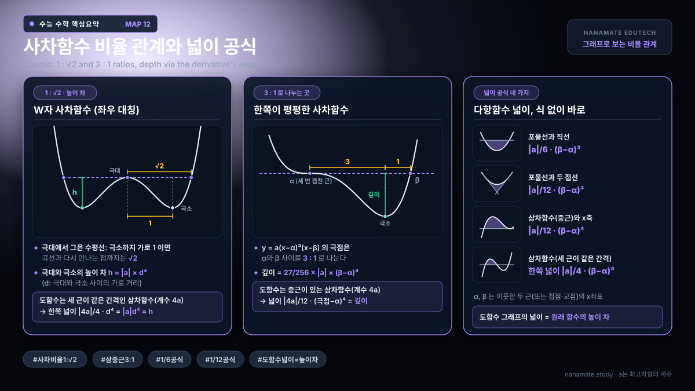

한눈에 요약
개념 설명은 각 파트 노트에서, 여기서는 시험 직전 훑어보기용으로
Part 1 · 지수와 로그
수학Ⅰ · 거듭제곱근·지수법칙·로그의 정의와 성질·지수함수와 로그함수
⚡ 한 줄 핵심 로그는 ‘밑을 몇 제곱하면 이 수가 되나’의 답. 23 = 8이라 log2 8 = 3.
- log가 보이면 → 진수(log 안의 수) > 0부터 적기
- 밑이 다르면 → 같은 밑으로 (8 = 23, 9 = 32)
- 부등식 → 밑이 1보다 작으면 부등호 뒤집기
- 그래프 → 점근선과 지나는 점 (0, 1)·(1, 0)부터
예 log2(x − 1) + log2(x + 1) = 3 → x2 − 1 = 8 → x = ±3. 진수 > 0이라 x = 3만
조심 log(M + N) ≠ log M + log N — 합으로 쪼개지는 건 곱의 로그뿐
🧠 이렇게 외우기 (3가지)
밑 바꾸기 — 이름이 곧 자리
밑은 밑(분모)으로 간다
- loga b
- log b ÷ log a — 밑 a가 아래로
- loga b × logb c
- loga c — 가운데 b가 맞물려 사라짐
- logb a
- 1 ÷ loga b — 밑과 진수를 바꾸면 역수
지수와 로그 — x, y를 맞바꾼 짝
지수는 (0, 1), 로그는 (1, 0)
- 지나는 점
- (0, 1) ↔ (1, 0)
- 점근선
- x축(y = 0) ↔ y축(x = 0)
- 정의역
- 모든 실수 ↔ x > 0
y = x를 접는 선으로 두면 한쪽만 외워도 다른 쪽은 뒤집어 읽힌다.
상용로그 — 자릿수와 log 5
지표 + 1 = 자릿수, log 2 + log 5 = 1
- log 600 = 2.7781
- 지표 2 → 세 자리 수
- 210
- 10 × 0.3010 = 3.010 → 네 자리 (1024)
- log 5
- 1 − 0.3010 = 0.6990 (2 × 5 = 10)
🔢거듭제곱근과 지수법칙
a^(m/n) = (ⁿ√a)^m = ⁿ√(a^m) (a > 0)
aᵐ·aⁿ = aᵐ⁺ⁿ aᵐ/aⁿ = aᵐ⁻ⁿ (aᵐ)ⁿ = aᵐⁿ
(ab)ⁿ = aⁿbⁿ (a/b)ⁿ = aⁿ/bⁿ
| a | n 짝수 | n 홀수 |
|---|---|---|
| a > 0 | 실근 2개(±) | 실근 1개(+) |
| a = 0 | 0뿐 | 0뿐 |
| a < 0 | 실근 없음 | 실근 1개(−) |
💡유리수 지수는 밑이 양수일 때만. 모든 밑을 가장 작은 소수의 거듭제곱(8=2³, 9=3², 27=3³)으로 맞춘 뒤 지수만 계산합니다.
📏로그의 정의·성질·밑 변환
logₐ(aᵏ) = k a^(logₐM) = M
logₐ b = log_c b / log_c a = 1 / log_b a
logₐ b · log_b c = logₐ c
| 성질 | 식 |
|---|---|
| 곱 | logₐ(MN) = logₐM + logₐN |
| 몫 | logₐ(M/N) = logₐM − logₐN |
| 거듭제곱 | logₐ(Mᵏ) = k logₐM |
⚠진수 조건을 식을 간단히 하기 전에 먼저 적습니다. logₐ(M+N) ≠ logₐM + logₐN, (logₐM)² ≠ 2logₐM.
🔟상용로그와 자릿수 (지표·가수 용어는 참고)
N ≥ 1이고 지표가 n → N의 정수 부분은 n+1 자리
−1.6990 = −2 + 0.3010 (지표 −2, 가수 0.3010)
💡자릿수 문제: log(aⁿ) = n log a 를 먼저 계산 → 지표 n을 읽고 자릿수는 지표 + 1. 값이 정수로 딱 떨어지면(log 1000 = 3) 가수 0, 자릿수 4.
📈지수함수·로그함수의 그래프
| y = aˣ | y = logₐx | |
|---|---|---|
| 정의역 | 모든 실수 | x > 0 |
| 치역 | y > 0 | 모든 실수 |
| 지나는 점 | (0, 1) | (1, 0) |
| 점근선 | x축 | y축 |
| a > 1 / 0 < a < 1 | 증가 / 감소 | 증가 / 감소 |
| 평행이동 | 점근선 | 지나는 점 |
|---|---|---|
| y = aˣ⁻ᵖ + q | y = q | (p, 1+q) |
| y = logₐ(x−p) + q | x = p | (p+1, q) |
⚖️방정식·부등식과 역함수
| 부등식 | a > 1 | 0 < a < 1 |
|---|---|---|
| aᶠ > aᵍ | f > g | f < g (방향 반대) |
| logₐ f > logₐ g | f > g (둘 다 양수) | f < g (둘 다 양수) |
- 풀이 순서
- 진수 조건·밑의 대소 → 식 정리 → 해 구하기 → 진수 조건으로 무연근 제거
- 수능 세 갈래
- 로그 값 계산(성질·밑 변환) / 평행이동 그래프의 점근선·점 / 두 그래프 교점이 놓인 직선
⚠ 이 파트 함정 — 이렇게 속입니다
log(a+b) = log a + log b→합으로 갈라지는 건 진수의 곱밑이 1보다 작아도 부등호 방향 유지→0과 1 사이에서는 방향이 바뀜진수 조건을 끝에 확인하지 않음→합친 뒤 나온 근은 다시 대입 (무연근)log 0.02 = −2.3010→−1.6990 = −2 + 0.3010 (가수는 0 이상)(aᵐ)ⁿ = a^(mⁿ)→거듭제곱 탑은 위쪽부터 계산ⁿ√(aⁿ) = a (n 짝수)→|a|역함수 교점은 항상 y = x 위→밑이 1보다 클 때만 (1/16 예)유리수 지수의 밑을 음수로→밑은 양수
수능은 이렇게 묻는다로그 값을 성질·밑 변환으로 계산 → 평행이동한 그래프의 점근선과 점의 좌표 → 두 그래프의 교점이 놓인 직선(진수 조건·밑의 대소 먼저)
📋 본문에서 뽑은 공식·표 시트 펼치기
거듭제곱근과 지수의 확장
| a | n이 짝수 | n이 홀수 |
|---|---|---|
| a > 0 | 실수 근 2개(양수, 음수). n√a는 양수 | 실수 근 1개(양수) |
| a = 0 | 0뿐 | 0뿐 |
| a < 0 | 실수 근 없음 | 실수 근 1개(음수). n√a < 0 |
n이 짝수: n√(an) = |a|
a−m/n = 1 / am/n
지수법칙
am / an = am−n
(am)n = amn
(ab)n = anbn
(a/b)n = an / bn
로그의 정의, 성질, 밑의 변환
loga 1 = 0, loga a = 1
loga (ak) = k, aloga M = M
| 성질 | 식 | 읽을 때 |
|---|---|---|
| 곱 | loga(MN) = loga M + loga N | 곱의 로그는 합 |
| 몫 | loga(M/N) = loga M − loga N | 몫의 로그는 차 |
| 거듭제곱 | loga(Mk) = k loga M | 진수의 지수는 앞으로 |
loga b · logb c = loga c
상용로그와 자릿수 (지표·가수는 참고)
지표 −2, 가수 0.3010
지수함수와 로그함수의 그래프
| y = ax | y = loga x | |
|---|---|---|
| 정의역 | 모든 실수 | x > 0 |
| 치역 | y > 0 | 모든 실수 |
| 항상 지나는 점 | (0, 1) | (1, 0) |
| 점근선 | x축 (y = 0) | y축 (x = 0) |
| a > 1 | 증가 | 증가 |
| 0 < a < 1 | 감소 | 감소 |
| 식 | 이동 | 점근선 | 지나는 점 |
|---|---|---|---|
| y = ax−p + q | x축 방향 p, y축 방향 q | y = q | (p, 1+q) |
| y = loga(x − p) + q | x축 방향 p, y축 방향 q | x = p | (p+1, q) |
방정식·부등식, 역함수, 교점과 직선
| 부등식 | a > 1 | 0 < a < 1 |
|---|---|---|
| af > ag | f > g | f < g |
| loga f > loga g | f > g (둘 다 양수) | f < g (둘 다 양수) |
핵심 용어
| 용어 | 뜻 |
|---|---|
| 같은 밑의 곱 | 지수는 더한다 |
| logₐ(MN) | logₐ M + logₐ N |
| logₐ b | 1/log_b a |
| 1 이상인 수의 자릿수 | 상용로그의 지표+1 |
| y=aˣ의 역함수 | y=logₐ x |
| 밑이 1보다 큰 지수함수 | 증가, 점근선 y=0 |
⚠ 자주 걸리는 함정
- log(a + b) = log a + log b로 쓰는 착각. 합으로 갈라지는 것은 진수의 곱입니다.
- 밑이 1보다 작아도 부등식 방향을 유지하는 착각. 0과 1 사이에서는 지수부등식·로그부등식 모두 방향이 바뀝니다.
- 진수 조건을 끝에 확인하지 않아 무연근을 답으로 남기는 경우. 로그를 합친 뒤에 나온 근은 다시 대입합니다.
- 상용로그의 음수 값을 −2.3010처럼 쓰는 경우. 가수는 0 이상 1 미만이라, −1.6990의 지표는 −2이고 가수는 0.3010입니다.
- (am)n과 a(mn)을 같은 식으로 보는 경우. 거듭제곱 탑은 위쪽부터 계산합니다.
- 짝수 제곱근에서 n√(an) = a라고 쓰는 경우. 짝수이면 절댓값 |a|입니다.
- 역함수와의 교점이 언제나 y = x 위라고 외우는 경우. 밑이 1보다 커서 증가함수일 때 성립합니다. 밑이 1보다 작으면 y = x 밖의 교점이 생길 수 있습니다. 밑이 1/16인 예가 본문에 있습니다.
- 유리수 지수의 밑을 음수로 두는 경우. 실수 범위에서는 밑을 양수로 둡니다.
Part 2 · 삼각함수
수학Ⅰ · 호도법·삼각함수의 그래프와 성질·삼각방정식·사인법칙과 코사인법칙
⚡ 한 줄 핵심 삼각함수는 반지름 1인 원 위 점의 좌표. 가로가 cos θ, 세로가 sin θ.
- 값·부호 → 원 위에 점을 찍고 가로·세로 부호 읽기
- a sin bx + d → 최대 |a| + d, 주기 2π/|b|
- sin x = k의 해 개수 → 가로선 y = k와 만나는 점 수
- 삼각형 → 마주 보는 변·각 쌍은 사인법칙, 끼인각은 코사인법칙
예 sin θ = 3/5, θ는 제2사분면(왼쪽 위) → cos2θ = 1 − 9/25 = 16/25, 가로는 음수라 cos θ = −4/5
조심 sin 2x에서 범위를 그대로 두기 ✕ — 0 ≤ x < 2π면 0 ≤ 2x < 4π
🧠 이렇게 외우기 (4가지)
사분면 부호 — 1·2·3·4 순서로
얼싸안코
- 1 얼(All)
- 셋 다 +
- 2 싸(sin)
- sin만 +
- 3 안(tan)
- tan만 +
- 4 코(cos)
- cos만 +
sin은 세로(y), cos는 가로(x)의 부호. 3사분면은 둘 다 −라 나눈 tan만 +.
특수각 — 루트 0~4를 2로
sin은 √0 · √1 · √2 · √3 · √4 ÷ 2, cos는 거꾸로
- sin (0 · π/6 · π/4 · π/3 · π/2)
- 0, 1/2, √2/2, √3/2, 1
- cos (같은 각)
- 1, √3/2, √2/2, 1/2, 0
- tan = sin ÷ cos
- 0, 1/√3, 1, √3, 정의 안 됨
각 바꾸기 — π는 그대로, π/2는 바꾼다
π · 2π 쪽은 이름 그대로, π/2 쪽은 sin ↔ cos
- π − θ
- sin θ, −cos θ (2사분면: sin만 +)
- π + θ
- −sin θ, −cos θ (3사분면)
- π/2 − θ
- cos θ, sin θ (1사분면: 모두 +)
부호는 θ를 작은 예각으로 보고, 그 각이 놓인 사분면의 ‘얼싸안코’로.
부채꼴 = 삼각형처럼
넓이는 (1/2) × 호 × 반지름
- 호의 길이
- l = rθ (θ는 라디안, 180° = π)
- 넓이
- S = (1/2)r2θ = (1/2)rl — 호를 밑변, 반지름을 높이로
📐호도법·부채꼴
호의 길이 l = rθ
넓이 S = ½r²θ = ½rl
⚠l = rθ, S = ½r²θ 의 θ는 라디안. 60°를 60으로 넣지 말고 π/180을 먼저 곱합니다.
🧭정의·부호·관계
sin²θ + cos²θ = 1 1 + tan²θ = 1/cos²θ
| 사분면 | sin | cos | tan |
|---|---|---|---|
| 제1 | + | + | + |
| 제2 | + | − | − |
| 제3 | − | − | + |
| 제4 | − | + | − |
| 각 | sin | cos | tan |
|---|---|---|---|
| π − θ | sin θ | −cos θ | −tan θ |
| π + θ | −sin θ | −cos θ | tan θ |
| 2π − θ | −sin θ | cos θ | −tan θ |
| π/2 − θ | cos θ | sin θ | 1/tan θ |
🌊그래프: 주기·진폭·최대·최소
| sin, cos | tan | |
|---|---|---|
| 기본 주기 | 2π | π |
| 진폭 | |a| | 쓰지 않음 |
| 주기 (a·f(bx+c)+d) | 2π/|b| | π/|b| |
| 최댓값 / 최솟값 | |a|+d / −|a|+d | 없음 |
| θ | 0 | π/6 | π/4 | π/3 | π/2 |
|---|---|---|---|---|---|
| sin | 0 | 1/2 | √2/2 | √3/2 | 1 |
| cos | 1 | √3/2 | √2/2 | 1/2 | 0 |
| tan | 0 | 1/√3 | 1 | √3 | × |
🎯삼각방정식·부등식
cos x = cos α ⇒ x = 2nπ ± α
tan x = tan α ⇒ x = nπ + α
⚠t = 2x로 치환하면 t의 범위가 두 배. |k| > 1이면 sin x = k, cos x = k는 해가 없습니다.
📏사인·코사인 법칙과 넓이
a² = b² + c² − 2bc cosA
S = ½bc sinA = abc/(4R)
| 주어진 것 | 법칙 |
|---|---|
| 두 각과 한 변 | 사인 (나머지 각은 180°에서 뺌) |
| 두 변과 끼인각 | 코사인 (넓이는 ½bc sinA) |
| 세 변 | 코사인으로 각 (cos의 부호로 둔각 판단) |
| 두 변과 끼인각 아닌 각 | 사인 (예각·둔각 두 가지 가능) |
⚠ 이 파트 함정 — 이렇게 속입니다
호도법 공식에 도 단위를 그대로→θ는 라디안sin과 tan의 주기를 모두 2π→tan의 주기는 πy = −2cos x + 3의 최댓값 = 1→진폭 |−2| = 2 → 최댓값 5제2사분면에서 cos 양수→제2사분면은 sin만 양수코사인법칙 부호를 반대로→둔각이면 cos가 음수예각 해만 답으로→180°에서 뺀 각도 합을 통과하면 답둔각의 sin을 음수로 넣어 넓이가 음수→넓이 공식의 sin은 양수sin x = 2에 해가 있다고 봄→사인·코사인의 범위는 −1 이상 1 이하
수능은 이렇게 묻는다그래프에서 주기·진폭·최대 읽기 → 삼각방정식의 근의 개수(주기 칸 안에서 수평선과의 교점 × 칸 수) → 사인·코사인 법칙으로 변·각·넓이
📋 본문에서 뽑은 공식·표 시트 펼치기
일반각과 호도법, 부채꼴
θ(도) = θ(라디안) × 180 / π
넓이 S = (1/2)r2θ = (1/2)rl
삼각함수의 정의, 부호, 관계
tan θ = sin θ / cos θ (cos θ ≠ 0)
1 + tan2θ = 1 / cos2θ
| 사분면 | sin | cos | tan |
|---|---|---|---|
| 제1사분면 | + | + | + |
| 제2사분면 | + | − | − |
| 제3사분면 | − | − | + |
| 제4사분면 | − | + | − |
| θ | 0 | π/6 | π/4 | π/3 | π/2 |
|---|---|---|---|---|---|
| 도 | 0° | 30° | 45° | 60° | 90° |
| sin | 0 | 1/2 | √2/2 | √3/2 | 1 |
| cos | 1 | √3/2 | √2/2 | 1/2 | 0 |
| tan | 0 | 1/√3 | 1 | √3 | 정의 안 됨 |
| 각 | sin | cos | tan |
|---|---|---|---|
| π − θ | sin θ | −cos θ | −tan θ |
| π + θ | −sin θ | −cos θ | tan θ |
| 2π − θ | −sin θ | cos θ | −tan θ |
| π/2 − θ | cos θ | sin θ | 1/tan θ |
그래프, 주기, 진폭, 평행이동과 최대·최소
tan의 기본 주기: π
| 읽는 것 | sin, cos | tan |
|---|---|---|
| 진폭 | |a| | 쓰지 않음(위로·아래로 한없이 감) |
| 주기 | 2π / |b| | π / |b| |
| 최댓값 | |a| + d | 없음 |
| 최솟값 | −|a| + d | 없음 |
| 평행이동 | x축 방향 p, y축 방향 d | 점근선도 같이 이동 |
삼각방정식과 부등식
cos x = cos α ⇒ x = 2nπ ± α
tan x = tan α ⇒ x = nπ + α
사인법칙, 코사인법칙, 넓이와 외접원
a2 = b2 + c2 − 2bc cos A
cos A = (b2 + c2 − a2) / (2bc)
S = (1/2)bc sin A
법칙을 고르는 법, 그래프의 교점 개수
| 주어진 것 | 고르는 법칙 | 주의 |
|---|---|---|
| 두 각과 한 변 | 사인법칙 | 나머지 각은 180°에서 뺍니다 |
| 두 변과 끼인각 | 코사인법칙으로 마주 보는 변, 넓이는 (1/2)bc sin A | 끼인각의 sin으로 넓이 |
| 세 변 | 코사인법칙으로 각 | 가장 긴 변의 대각이 둔각인지 cos의 부호로 판단 |
| 두 변과 끼인각이 아닌 각 | 사인법칙 | 마주 보는 각이 예각·둔각 두 가지일 수 있음 |
핵심 용어
| 용어 | 뜻 |
|---|---|
| 부채꼴의 호의 길이 | 반지름 곱하기 라디안 |
| 사인·코사인의 주기 | 2π |
| 탄젠트의 주기 | π |
| sin²θ + cos²θ | 1 |
| 사인법칙 | a/sin A = 2R |
| 두 변과 끼인각 | 코사인법칙과 넓이 |
⚠ 자주 걸리는 함정
- 호도법 공식에 도 단위 각을 그대로 넣는 경우. l = rθ의 θ는 라디안입니다.
- sin과 tan의 주기를 둘 다 2π로 두는 경우. tan의 주기는 π입니다.
- y = −2 cos x + 3의 최댓값을 −2 + 3 = 1로 쓰는 경우. 진폭은 |−2| = 2이고 최댓값은 5입니다.
- 제2사분면에서 cos를 양수로 두는 경우. 제2사분면은 sin만 양수입니다.
- 코사인법칙의 부호를 반대로 쓰는 경우. 둔각이면 cos가 음수이고, 마주 보는 변의 제곱은 다른 두 변의 제곱의 합보다 큽니다.
- 끼인각이 아닌 두 변과 한 각에서 예각 해만 답으로 쓰는 경우. 180°에서 그 각을 뺀 값도 각의 합을 통과하면 답입니다.
- 둔각의 sin을 음수로 넣어 넓이가 음수가 되는 경우. 넓이 공식의 sin은 양수입니다.
- sin x = 2처럼 |k| > 1인 방정식에 해가 있다고 보는 경우. 사인·코사인의 범위는 −1 이상 1 이하입니다.
Part 3 · 수열
수학Ⅰ · 등차·등비수열, 시그마, 수열의 합, 귀납적 정의, 수학적 귀납법
⚡ 한 줄 핵심 수열은 이웃한 항 사이의 규칙. 차가 일정하면 등차, 비가 일정하면 등비.
- 차가 일정 → 등차: an = a + (n − 1)d
- 비가 일정 → 등비: an = arn−1
- Sn(n항까지의 합)이 주어지면 → an = Sn − Sn−1
- 점화식(앞 항으로 다음 항) → 4~5항을 직접 써 보기
예 제3항 7, 제7항 19 → 4칸에 12 늘어 d = 3, a = 1 → S10 = 10 × (1 + 28)/2 = 145
조심 Sn − Sn−1은 n ≥ 2에서만 — 첫째항은 a1 = S1으로 따로 확인
🧠 이렇게 외우기 (4가지)
중항 둘 — 차는 더하고, 비는 곱한다
등차중항은 더해서 반, 등비중항은 곱해서 루트
- 등차 a, b, c
- 2b = a + c → b = (a + c)/2
- 등비 a, b, c
- b2 = ac → b = ±√(ac)
등비중항은 ± 둘 — 양수라고 정해 준 때만 하나.
∑ 세 공식 — 세제곱은 합의 제곱
k3의 합은 k의 합을 제곱
- ∑k
- n(n + 1)/2
- ∑k2
- n(n + 1)(2n + 1)/6
- ∑k3
- {n(n + 1)/2}2 = (∑k)2
n = 3을 넣어 6 · 14 · 36이 나오면 맞게 외운 것. ∑k2(14)과 (∑k)2(36)은 다르다.
망원경 합 — 가운데가 접힌다
이웃끼리 빼면 처음과 끝만 남는다
- 부분분수
- 1/{k(k + 1)} = 1/k − 1/(k + 1) → 합 1 − 1/(n + 1)
- 유리화
- 1/(√k + √(k + 1)) = √(k + 1) − √k → 합 √(n + 1) − 1
간격이 2면 앞에 1/2 — 1/{k(k + 2)} = (1/2){1/k − 1/(k + 2)}
수학적 귀납법 = 도미노
첫 조각이 넘어지고, 앞이 넘어지면 다음도
- 1단계
- n = 1에서 참
- 2단계
- n = k에서 참이면 n = k + 1에서도 참
🪜등차수열
Sₙ = n(a+l)/2 = n{2a+(n−1)d}/2
💡공차 ≠ 0이면 Sₙ은 n의 이차식. Sₙ = pn² + qn(상수항 0)이면 등차수열, 상수항이 남으면 첫째항만 어긋날 수 있음(Sₙ = n² + 1).
✖️등비수열
r ≠ 1: Sₙ = a(rⁿ−1)/(r−1) r = 1: Sₙ = na
- 등차중항
- (a + c)/2
- 등비중항
- ±√(ac) — 양수로 한정했을 때만 양의 중항
- 합 공식
- r = 1을 분모에 넣지 않기
∑시그마와 Sₙ → aₙ
∑k² = n(n+1)(2n+1)/6
∑k³ = {n(n+1)/2}²
a₁ = S₁, n ≥ 2: aₙ = Sₙ − Sₙ₋₁
⚠aₙ = Sₙ − Sₙ₋₁은 n ≥ 2일 때의 식. 구한 식에 n = 1을 넣어 S₁과 같은지 꼭 비교합니다 (Sₙ = 2ⁿ이면 첫째항 2, 차이 식은 2ⁿ⁻¹).
🧩부분분수·계차·점화식
| 유형 | 식 |
|---|---|
| 부분분수 | 1/{k(k+1)} = 1/k − 1/(k+1) → ∑ = n/(n+1) |
| 간격 2 | 1/{k(k+2)} = ½{1/k − 1/(k+2)} (½ 빼먹지 않기) |
| 유리화 | 1/(√k + √(k+1)) = √(k+1) − √k → ∑ = √(n+1) − 1 |
| 계차수열 | aₙ = a₁ + ∑bₖ (k = 1 ~ n−1) |
| 점화식 | 수열 | 일반항 |
|---|---|---|
| aₙ₊₁ = aₙ + d | 등차 | a + (n−1)d |
| aₙ₊₁ = r·aₙ | 등비 | a·rⁿ⁻¹ |
| aₙ₊₁ = p·aₙ + q (p ≠ 1) — 참고 | 등비로 환원 | aₙ − α = pⁿ⁻¹(a₁ − α), α = q/(1−p) · 수능은 항을 차례로 구하게 함 |
- ① n = 1 확인시작 항
- ② n = k 가정귀납 가정
- ③ n = k+1 증명k를 포함해 변형
- 결론모든 자연수
⚠ 이 파트 함정 — 이렇게 속입니다
공비가 1인데 Sₙ = a(rⁿ−1)/(r−1)→분모 0 → Sₙ = naaₙ = Sₙ − Sₙ₋₁을 n = 1에도 검사 없이→a₁ = S₁과 일치하는지 비교∑k²과 (∑k)²을 같은 공식으로→세제곱의 합이 (자연수 합)의 제곱등차중항과 등비중항을 바꿈→등차 = 평균, 등비 = ±√(ac)귀납법에서 n = 1 확인을 빼먹음→시작 항이 없으면 사슬이 이어지지 않음1/{k(k+2)}에서 ½를 빼먹음→1/k − 1/(k+2) = 2/{k(k+2)} → 앞에 ½등비중항을 항상 하나로→곱이 양수면 실수 중항 두 개aₙ₊₁ = aₙ + q에 α = q/(1−p)→p = 1이면 등차수열로 따로
수능은 이렇게 묻는다Sₙ이 주어지면 a₁ = S₁과 n ≥ 2를 따로 → 점화식은 4~5항을 써서 등차·등비·홀짝 판별 → 구한 일반항을 n = 1, 2에 넣어 검산
📋 본문에서 뽑은 공식·표 시트 펼치기
등차수열과 등차중항
Sn = n(a + l) / 2 = n{2a + (n − 1)d} / 2
등비수열과 등비중항
r ≠ 1일 때 Sn = a(rn − 1) / (r − 1)
r = 1일 때 Sn = na
시그마와 자주 쓰는 합, Sn과 an
∑ c ak = c ∑ ak
∑k=1n c = cn
∑k=1n k2 = n(n + 1)(2n + 1) / 6
∑k=1n k3 = {n(n + 1) / 2}2
Sn으로 an 복원하기
n ≥ 2일 때 an = Sn − Sn−1
부분분수, 분모의 유리화, 계차수열
부분분수
∑k=1n 1/{k(k + 1)} = 1 − 1/(n + 1) = n/(n + 1)
1/{k(k + 2)} = (1/2){1/k − 1/(k + 2)}
분모의 유리화
이웃한 항의 차로 일반항 구하기 (‘계차수열’ 용어는 참고)
an = a1 + ∑k=1n−1 bk
귀납적 정의와 조건이 갈리는 점화식
| 점화식 | 수열 | 일반항 |
|---|---|---|
| a1 = a, an+1 = an + d | 등차 | an = a + (n − 1)d |
| a1 = a, an+1 = r an | 등비 | an = a rn−1 |
| an+1 = p an + q (p ≠ 1) | 등비로 환원 | an − α = pn−1(a1 − α) |
조건이 갈리는 점화식
수학적 귀납법
= (k + 1){k(2k + 1)/6 + (k + 1)}
= (k + 1)(2k2 + 7k + 6) / 6
= (k + 1)(k + 2)(2k + 3) / 6
핵심 용어
| 용어 | 뜻 |
|---|---|
| 등차수열의 일반항 | a+(n−1)d |
| 공비가 1이 아닌 등비의 합 | a(rⁿ−1)/(r−1) |
| n이 2 이상일 때 aₙ | Sₙ − Sₙ₋₁ |
| 1부터 n까지 k의 합 | n(n+1)/2 |
| 등차중항 | 두 수의 평균 |
| 수학적 귀납법의 첫 단계 | 가장 작은 n을 확인 |
⚠ 자주 걸리는 함정
- 공비가 1인데도 Sn = a(rn − 1)/(r − 1)에 대입하는 경우. 분모가 0입니다. 합은 na입니다.
- an = Sn − Sn−1을 n = 1에도 검사 없이 쓰는 경우. Sn = 2n이면 차이 식은 2n−1이지만 첫째항은 2입니다.
- ∑ k2과 (∑ k)2을 같은 공식으로 쓰는 경우. 세제곱의 합이 (자연수 합)의 제곱입니다.
- 등차중항과 등비중항을 바꿈. 등차중항은 평균 (a + c)/2, 등비중항은 ±√(ac)입니다.
- 귀납법에서 n = k + 1만 변형하고 n = 1 확인을 빼먹는 경우. 시작 항이 없으면 사슬이 이어지지 않습니다.
- 1/{k(k + 2)}의 부분분수에서 1/2을 빼먹음. 1/k − 1/(k + 2) = 2/{k(k + 2)}이므로 앞에 1/2을 곱해야 합니다.
- 등비중항을 항상 하나로 쓰는 경우. 두 수의 곱이 양수이면 실수 중항은 두 개일 수 있습니다.
- an+1 = an + q인데도 α = q/(1 − p)를 쓰는 경우. p = 1이면 등차수열로 따로 풉니다.
Part 4 · 함수의 극한과 연속
수학Ⅱ · 극한값·좌우극한·극한의 성질·연속과 불연속·사잇값 정리
⚡ 한 줄 핵심 극한은 다가가며 읽은 높이, 함숫값은 찍힌 점의 높이. 둘이 같아야 연속.
- 그래프 → 왼쪽 높이·오른쪽 높이·찍힌 점을 따로 적기
- 0/0 꼴 → 인수분해·유리화로 약분한 뒤 대입
- ∞/∞ 꼴 → 차수 같으면 최고차항 계수 비, 분모가 높으면 0
- 분모 → 0인데 극한이 실수 → 분자도 → 0
예 limx→1 (x2 + ax − 3)/(x − 1)이 실수면 분자도 0 → 1 + a − 3 = 0, a = 2 (극한은 x + 3 → 4)
조심 극한에 f(a)를 그냥 넣기 ✕ — 구멍 높이(극한)와 찍힌 점(함숫값)은 따로
🧠 이렇게 외우기 (2가지)
연속 — 세 칸 체크
점이 있고, 극한이 있고, 둘이 같다
- ① f(a)
- 찍힌 점이 있다
- ② lim f(x)
- 왼쪽·오른쪽 높이가 한 값으로 모인다
- ③ lim f(x) = f(a)
- 모인 높이에 점이 찍혀 있다
하나라도 빠지면 불연속 — 점이 없음(①), 양쪽이 어긋남(②), 점이 딴 높이(③).
두 정리의 입장권
닫힌 구간에서 연속이어야 쓴다
- 사잇값 정리
- f(a)와 f(b) 사이 높이를 적어도 한 번 지난다 — 양 끝 부호가 다르면 근이 있다
- 최대·최소 정리
- 최댓값·최솟값이 반드시 있다
- 입장권이 없으면
- (0, 1)의 y = x는 최대·최소 없음, 끊긴 함수는 높이를 건너뜀
둘 다 ‘있다’만 말한다 — 몇 개인지, 어디인지는 미분으로.
🕳️극한 vs 함숫값
| 상황 | 극한값 | 읽는 말 |
|---|---|---|
| 좌극한 = 우극한 = L | L | 수렴 |
| 좌극한 ≠ 우극한 | 없다 | 발산 |
| 양쪽 모두 +∞ | 없다 | 양의 무한대로 발산 |
| 한쪽 +∞, 다른 쪽 −∞ | 없다 | 발산 |
💡극한은 그 점의 함숫값(정의 여부까지)을 보지 않습니다. 그래프 문항은 x = a에 세로선을 긋고 왼쪽 높이 · 오른쪽 높이 · 찍힌 점 높이를 세 칸에 적습니다.
🧮극한 계산: 0/0, ∞/∞
| 꼴 | 방법 | 예 |
|---|---|---|
| 0/0 | 인수분해 | (x²−3x+2)/(x−1) → x−2 → −1 |
| 0/0 (근호) | 유리화 | (√(1+x)−1)/x → 1/(√(1+x)+1) → 1/2 |
| ∞/∞ | 최고차항 비교 | 차수 같음 → 계수비, 분모가 크면 0, 분자가 크면 발산 |
⚠0/0은 ‘답이 0’이 아니라 ‘식을 바꿔야 한다’는 신호. x → −∞는 차수 차가 홀수면 부호가 반대.
🔗연속의 세 조건
- ① f(a) 정의
- ② 극한이 실수로 존재좌극한 = 우극한
- ③ 극한 = 함숫값lim f = f(a)
| 함수 | 연속인 점 |
|---|---|
| 다항함수 | 모든 실수 |
| 유리함수 | 분모 ≠ 0인 모든 점 |
| |f(x)| | f가 연속인 점 |
| f/g | g ≠ 0인 점 |
🚧불연속의 종류와 합성함수
| 종류 | 극한 | 고칠 수 있나 |
|---|---|---|
| 제거 가능 | 실수 극한 있음 | 함숫값을 극한값으로 |
| 점프 | 좌 ≠ 우 | 불가 |
| 무한 | ±∞ | 불가 |
💡f(g(x))가 연속이어도 f, g가 각각 연속인 건 아닙니다 (안쪽 함수가 바깥 함수의 불연속점을 피하면 합성만 연속).
🎯사잇값 정리
- 사잇값
- 연속인 구간에서 f의 부호가 바뀌는 두 끝 → 근이 적어도 하나 (유일은 따로)
- 삼차식
- 서로 다른 세 구간에서 부호가 바뀌면 각 구간에 정확히 하나
- 수능형
- 조건 (가)(나)로 함수 정하기 · 불연속점의 개수 · f(g(x))의 연속
⚠ 이 파트 함정 — 이렇게 속입니다
극한값 = 함숫값→구멍의 높이가 극한, 찍힌 점이 함숫값분모 0이면 극한이 항상 없다→분자도 0이면 약분 뒤 극한이 나오는 경우가 많음0/0의 답을 0으로→0/0은 식을 바꿔야 한다는 신호∞/∞에서 차수를 무시→같으면 계수비, 분모가 크면 0, 분자가 크면 발산x → −∞도 x → ∞와 부호 같음→차수 차가 홀수면 반대극한만 확인하고 연속이라 함→함숫값이 없거나 다르면 불연속사잇값 정리가 근이 하나뿐임을 보장→‘적어도 하나’f(g)가 연속이면 f도 연속→합성만 연속일 수 있음
수능은 이렇게 묻는다그래프에서 좌·우극한과 함숫값 읽기 → 0/0·∞/∞ 극한값(미지수 결정) → 불연속점의 개수와 f(g(x))의 연속
📋 본문에서 뽑은 공식·표 시트 펼치기
함수의 극한과 좌우극한
| 상황 | 극한값 | 말 |
|---|---|---|
| 좌극한 = 우극한 = L (실수) | L | 수렴 |
| 좌극한 ≠ 우극한 | 없다 | 발산 |
| 양쪽 다 +∞ | 없다 (실수 극한값은 아님) | 양의 무한대로 발산 |
| 양쪽 다 −∞ | 없다 | 음의 무한대로 발산 |
| 한쪽은 +∞, 다른 쪽은 −∞ | 없다 | 발산 |
바로 대입되는 경우
무한대로 발산
| 함수 | x→1− | x→1+ | x→1 |
|---|---|---|---|
| 1/(x−1) | −∞ | +∞ | 극한 없음 |
| 1/(x−1)² | +∞ | +∞ | 양의 무한대로 발산 |
극한의 성질과 0/0 꼴, ∞/∞ 꼴
lim (f−g) = lim f − lim g
lim (cf) = c·lim f
lim (fg) = (lim f)·(lim g)
lim (f/g) = (lim f)/(lim g) (lim g ≠ 0)
0/0 꼴 — 인수분해
0/0 꼴 — 유리화
∞/∞ 꼴 — 최고차항 비교
| 차수 | x→∞ | x→−∞에서 덧붙일 점 |
|---|---|---|
| n = m | a/b | 같음 (x의 거듭제곱 차가 0) |
| n < m | 0 | 같음 |
| n > m | 부호는 a/b의 부호인 채 ∞ | k=n−m이 홀수이면 부호가 반대 |
그래프로 극한 읽기
| 그래프의 모습 | 극한 | 함숫값 | x=a에서 |
|---|---|---|---|
| y=x+1 직선인데 (1, 2)만 구멍 | 2 | 없음 | 정의되지 않음. 극한은 있음 |
| 구멍 (1, 2)와 따로 찍힌 점 (1, 5) | 2 | 5 | 불연속 (극한 ≠ 함숫값) |
| x=0 왼쪽 높이 0, 오른쪽 높이 1, 점은 1 | 없음 | 1 | 점프 불연속 |
| x=1 양쪽에서 위로 치솟음 | 없음 (+∞로 발산) | 없음 | 무한 불연속 |
| 끊기지 않고 점이 곡선 위에 있음 | f(a) | f(a) | 연속 |
함수의 연속
(2) limx→a f(x)가 실수로 존재한다 (좌극한 = 우극한)
(3) limx→a f(x) = f(a)
연속함수의 성질
| 함수 | 연속인 점 |
|---|---|
| 다항함수 | 모든 실수 |
| 유리함수 (분자·분모가 다항식) | 분모가 0이 아닌 모든 점 |
| |f(x)| | f가 연속인 점. 절댓값은 연속을 깨지 않음 |
| 연속함수의 합·차·실수배·곱 | 두 함수가 모두 연속인 점 |
| 연속함수의 몫 | 분모가 0이 아닌 점 |
| 불연속의 종류 | 극한 | 연속으로 만들 수 있나 |
|---|---|---|
| 제거 가능 | 실수 극한이 있음 | 함숫값을 극한값으로 정하면 됨 |
| 점프 | 좌극한 ≠ 우극한 | 점 하나의 함숫값으로는 불가 |
| 무한 | ±∞로 발산 | 불가 |
합성함수의 연속
g(x) = x² + 1 ≥ 1 → 0을 지나지 않음
f(g(x)) = 1 (모든 x) → 모든 점에서 연속
핵심 용어
| 용어 | 뜻 |
|---|---|
| 극한값 | 점 옆에서 다가간 높이 |
| 함숫값 | 그 점에 찍힌 높이 |
| 좌극한 | 작은 쪽에서 다가간 값 |
| 우극한 | 큰 쪽에서 다가간 값 |
| 사잇값 정리 | 사이 값을 적어도 한 번 |
| 최대·최소 정리 | 닫힌 구간에서 연속이면 최대·최소 존재 |
⚠ 자주 걸리는 함정
- 극한값과 함숫값을 같은 것으로 보기. 구멍의 높이가 극한이고, 칠해진 점의 높이가 함숫값입니다. 둘은 따로 읽습니다.
- 분모가 0이면 극한이 항상 없다. 분자도 함께 0이면 약분 뒤에 실수 극한이 나오는 경우가 많습니다.
- 0/0의 답을 0으로 쓰기. 0/0은 아직 정해지지 않은 꼴입니다. 식을 바꾼 뒤에야 값이 나옵니다.
- ∞/∞에서 차수를 무시하기. 차수가 같으면 최고차 계수의 비, 분모 차수가 더 크면 0, 분자 차수가 더 크면 발산입니다.
- x→−∞에서도 x→∞와 부호가 같다고 생각하기. 분자와 분모의 차수 차가 홀수이면 부호가 반대입니다.
- 연속의 세 조건 중 극한만 확인하기. 극한이 있어도 함숫값이 없거나 다르면 불연속입니다.
- 사잇값 정리가 근이 하나뿐임을 보장한다고 생각하기. 보장은 ‘적어도 하나’입니다. 유일은 다른 근거가 필요합니다.
- f(g(x))가 연속이면 f도 연속이라고 생각하기. 안쪽 함수가 바깥 함수의 불연속점을 피하면 합성만 연속일 수 있습니다.
Part 5 · 미분
수학Ⅱ · 미분계수·도함수·접선·증감과 극값·그래프·방정식과 부등식·속도와 가속도
⚡ 한 줄 핵심 f′(x)는 접선의 기울기. +면 오르고 −면 내려가며, 부호가 바뀌는 곳이 극값.
- 접선 → 접점 (t, f(t))와 기울기 f′(t)로 식 세우기
- 모양 → f′를 인수분해해 부호표 (+ − +)
- 극값 → f′의 부호가 바뀌는 점에서만
- f(x) = k의 실근 수 → y = k와 그래프의 교점 수
예 f(x) = x3 − 3x → f′ = 3(x + 1)(x − 1), 부호 + − + → x = −1에서 극대 2, x = 1에서 극소 −2
조심 f′(c) = 0만 보고 극값이라 하기 ✕ — y = x3은 x = 0 양쪽 다 오르막
🧠 이렇게 외우기 (3가지)
연속과 미분 — 끊김과 꺾임
끊기면 연속 ✕, 꺾이면 미분 ✕
- 끊긴 곳
- 연속 ✕ → 미분도 ✕
- 꺾인 곳
- y = |x|의 x = 0: 연속 ○, 미분 ✕ (왼쪽 기울기 −1, 오른쪽 1)
- 매끄러운 곳
- 둘 다 ○
미분가능하면 연속 — 거꾸로는 ✕.
삼차함수 — 가운데 점 대칭
중심 x = −b/(3a), 높이 = 극값의 평균
- 중심 x
- 두 극점 x좌표의 중점 (변곡점)
- 중심 높이
- (극댓값 + 극솟값)/2
- 예
- x3 − 3x2 + 5: 극점 0, 2 → 중심 x = 1, (5 + 1)/2 = 3 = f(1)
삼차함수 개형 — b2 − 3ac 하나로
+면 언덕과 골짜기, 0 이하면 쭉 오르막
- b2 − 3ac > 0
- 증가 → 감소 → 증가 (a > 0)
- b2 − 3ac ≤ 0
- 극값 없이 증가 (0이면 수평 접선만 하나)
- a < 0
- 모두 거꾸로 — 극대가 오른쪽
📉미분계수와 접선
접선: y − f(a) = f′(a)(x − a)
(xⁿ)′ = nxⁿ⁻¹ (fg)′ = f′g + fg′
- 미분가능 ⇒ 연속
- 역은 거짓 — y = |x|는 x = 0에서 연속이지만 미분계수 없음
- 조각 함수
- 경계에서 먼저 연속, 그다음 좌·우 도함수 비교
- |g(x)|
- g(c) = 0이어도 곱해진 다항식이 0이면 미분가능
⛰️삼차함수의 개형
| f′의 부호 | 모양 | 이름 |
|---|---|---|
| + → − | 증가 후 감소 | 극대 |
| − → + | 감소 후 증가 | 극소 |
| 안 바뀜 | 계속 증가/감소 | 극값 아님 (y = x³의 x = 0) |
| D/4 = b² − 3ac | f′ = 0 | 그래프 (a > 0) |
|---|---|---|
| D > 0 | 서로 다른 두 실근 | 증가 → 감소 → 증가 (극대·극소) |
| D = 0 | 중근 | 극값 없이 증가 |
| D < 0 | 실근 없음 | 극값 없이 증가 |
💡삼차함수의 변곡점의 x좌표는 m = −b/(3a), 그 점에 대해 대칭.
🔀방정식·부등식
- 근의 개수
- y = f(x)와 y = k의 교점 개수 — 극댓값·극솟값 사이의 k
- 부등식
- 극솟값이 양수여도 한쪽 끝은 −∞ → ‘항상’은 양 끝의 부호까지 확인
- 극대 ≠ 최대
- 끝점에서 최대가 나올 수 있고, 끝점은 극값이 아님
🚗속도와 가속도
| v | a | 움직임 |
|---|---|---|
| + | + | 양의 방향, 속력 증가 |
| + | − | 양의 방향, 속력 감소 |
| − | − | 음의 방향, 속력 증가 |
| − | + | 음의 방향, 속력 감소 |
⚠ 이 파트 함정 — 이렇게 속입니다
연속이면 미분가능→미분가능하면 연속, y = |x|가 반례(fg)′ = f′g′→f′g + fg′f′(c) = 0이면 극값→부호가 바뀌어야 (y = x³)극댓값 = 구간의 최댓값→끝점에서 최대가 나올 수 있음절댓값은 꺾인 점에서 항상 미분 불가→곱해진 다항식이 0이면 미분가능, 계수 0접선은 곡선과 한 점에서만 만난다→삼차곡선은 접점 외 교점이 생길 수 있음속도가 0이면 방향이 바뀐다→부호가 바뀔 때만가속도가 양수이면 속력 증가→v와 a의 부호가 같을 때
수능은 이렇게 묻는다접선 조건·극값 조건으로 계수 결정 → 절댓값·조각 함수의 미분가능성 → 삼차함수의 근의 개수와 부등식('항상'은 양 끝까지)
📋 본문에서 뽑은 공식·표 시트 펼치기
평균변화율과 미분계수
미분가능하면 연속입니다
도함수와 접선의 방정식
(cf)′ = c f′
(f+g)′ = f′ + g′
(f−g)′ = f′ − g′
(fg)′ = f′g + fg′
접선의 방정식
절댓값이 붙은 함수의 미분가능성
증가·감소, 극값, 그래프
| f′의 부호 | x=c 근처의 모양 | 이름 |
|---|---|---|
| 양수에서 음수로 | 증가하다 감소 | 극대 |
| 음수에서 양수로 | 감소하다 증가 | 극소 |
| 부호가 안 바뀜 | 계속 증가 또는 계속 감소 | 극값 아님 |
삼차함수의 개형
| D/4=b²−3ac | 도함수 | 그래프 (a>0) |
|---|---|---|
| D/4>0 | 서로 다른 두 실근 α<β | 증가 → 감소 → 증가. x=α에서 극대, x=β에서 극소 |
| D/4=0 | 중근 하나, 그 점에서만 0 | 수평 접선은 있으나 부호가 안 바뀌어 극값 없이 증가 |
| D/4<0 | 항상 양수 | 극값 없이 증가 |
삼차함수의 대칭
사차함수의 개형
| 구간 | f′ 부호 | f |
|---|---|---|
| x < −1 | 음 | 감소 |
| −1 < x < 0 | 양 | 증가 |
| 0 < x < 1 | 음 | 감소 |
| x > 1 | 양 | 증가 |
방정식과 부등식
| k | 서로 다른 실근 |
|---|---|
| k > 2 또는 k < −2 | 1개 |
| k = 2 | 2개 (x=−1에서 접하고 x=2에서 만남) |
| k = −2 | 2개 (x=1에서 접하고 x=−2에서 만남) |
| −2 < k < 2 | 3개 |
속도와 가속도
| 속도 v | 가속도 a | 움직임 |
|---|---|---|
| + | + | 양의 방향으로 속력이 증가 |
| + | − | 양의 방향으로 가다가 속력이 감소 |
| − | − | 음의 방향으로 속력이 증가 |
| − | + | 음의 방향으로 가다가 속력이 감소 |
핵심 용어
| 용어 | 뜻 |
|---|---|
| 평균변화율 | 두 점을 잇는 기울기 |
| 미분계수 | 그 점의 접선 기울기 |
| 극댓값 | 양쪽 근방에서 가장 큼 |
| 최댓값 | 구간 전체에서 가장 큼 |
| 미분가능 | 좌우 미분계수가 같음 |
| 연속 | 극한과 함숫값이 같음 |
⚠ 자주 걸리는 함정
- 연속이면 미분가능하다고 생각하기. 미분가능하면 연속입니다. y=|x|는 x=0에서 연속이지만 미분계수가 없습니다.
- (fg)′=f′g′으로 쓰기. 곱의 미분은 f′g+fg′입니다.
- f′(c)=0이면 극값이라고 단정하기. 부호가 바뀌지 않으면 극값이 아닙니다. y=x³의 x=0이 그렇습니다.
- 극댓값과 구간의 최댓값을 같은 말로 쓰기. 최댓값은 끝점에서 나올 수 있고, 끝점은 극값이 아닙니다. 사차함수의 극댓값은 양 끝이 더 높이 올라가면 최댓값이 아닙니다.
- 절댓값은 꺾인 점에서 항상 미분불능이라고 생각하기. 곱해진 다항함수가 그 점에서 0이면 미분가능하고 미분계수는 0입니다.
- 접선은 곡선과 한 점에서만 만난다고 생각하기. 삼차곡선에서는 접점 외에 다른 교점이 있을 수 있습니다.
- 속도가 0이면 방향이 바뀐다고 생각하기. 속도의 부호가 바뀔 때만 방향이 바뀝니다.
- 속력 증가를 가속도가 양수인 것으로만 판단하기. 속도가 음수일 때는 가속도도 음수여야 속력이 늘어납니다.
Part 6 · 적분
수학Ⅱ · 부정적분·정적분·정적분의 성질·넓이·속도와 거리
⚡ 한 줄 핵심 적분은 미분을 거꾸로. 정적분은 F(b) − F(a)이고, x축 아래는 음수로 센다.
- ∫ 계산 → 미분해서 f가 되는 F(원시함수) 찾기
- 넓이 → x축과 만나는 점에서 끊고 각각 절댓값
- ∫ax f(t) dt가 든 식 → 먼저 x로 미분
- 속도 v(t) → v의 부호가 바뀌는 시각에서 끊기
예 ∫02 (x − 1) dx = 0이지만, 넓이는 x = 1에서 끊어 1/2 + 1/2 = 1
조심 속도를 적분한 값을 거리로 쓰기 ✕ — 거리는 |v|를 적분 (되돌아온 길까지)
🧠 이렇게 외우기 (2가지)
우함수·기함수 — 한자가 곧 답
우(偶, 짝)는 두 배, 기(奇, 홀)는 0
- 우함수 偶
- f(−x) = f(x), 짝수 차항·상수 — y축 대칭 → ∫−aa = 2∫0a
- 기함수 奇
- f(−x) = −f(x), 홀수 차항 — 원점 대칭 → ∫−aa = 0
−a부터 a까지일 때만. 다항식은 홀수 차항을 지우고 짝수 차항만 두 배.
위치·속도·가속도 사다리
미분은 한 칸 아래로, 적분은 한 칸 위로
- 사다리
- 위치 x — 속도 v — 가속도 a
- 변위
- ∫v dt — 되돌아온 만큼 빠진다
- 이동 거리
- ∫|v| dt — 간 길을 다 더한다
∫부정적분과 정적분
F′ = f ⇒ ∫ₐᵇ f dx = F(b) − F(a)
| 성질 | 식 |
|---|---|
| 합·차·실수배 | ∫(f±g) = ∫f ± ∫g, ∫cf = c∫f |
| 구간 뒤집기 | ∫ₐᵇ f = −∫ba f |
| 같은 점 | ∫ₐᵃ f = 0 |
| 구간 분할 | ∫ₐᶜ f = ∫ₐᵇ f + ∫bc f |
💡부정적분에는 C, 정적분 계산 결과에는 C를 붙이지 않습니다.
🔁대칭과 미분과의 관계
d/dx ∫ₐˣ f(t)dt = f(x)
d/dx ∫ᵥ₍ₓ₎ᵘ⁽ˣ⁾ f(t)dt = f(u)u′ − f(v)v′
💡정적분으로 정의된 함수의 극점은 피적분함수의 부호가 바뀌는 점 — 끝까지 적분하지 않아도 증감을 읽을 수 있습니다.
🌗넓이: 부호 있는 적분 vs 절댓값
- 곡선과 x축
- ∫ₐᵇ |f(x)| dx
- 두 곡선 사이
- 교점 사이의 한 점에 대입해 큰 쪽에서 작은 쪽을 뺌
- 삼차함수 넓이 비
- |a|p³(p+2q)/12 : |a|q³(2p+q)/12
🏃위치·속도·가속도와 거리
위치 변화량 = ∫v dt = x(t₂) − x(t₁)
움직인 거리 = ∫|v| dt
| 읽는 양 | 속도 그래프에서 |
|---|---|
| 위치 변화량 | t축 위쪽 넓이 − 아래쪽 넓이 |
| 움직인 거리 | 위쪽 넓이 + 아래쪽 넓이 |
| 속도 최대 시각 | 그래프의 가장 높은 점 (위치 최대 아님) |
| 방향이 바뀌는 시각 | 그래프가 t축을 가로지르는 점 |
| 속력 증가 | 그래프가 t축에서 멀어지는 구간 |
⚠ 이 파트 함정 — 이렇게 속입니다
부정적분에 C를 빼먹기→조건이 없으면 상수만큼 여러 개 (정적분 결과엔 C 없음)부호 있는 정적분을 넓이로→x축 아래는 음수 → 구간을 나눠 절댓값위치 변화량 = 움직인 거리→∫v dt vs ∫|v| dt기함수면 항상 적분 0→구간이 −a ~ a일 때만∫ₐᵇ와 ∫ba를 더해 두 배→더하면 0위끝만 미분하고 아래끝은 그냥 둠→아래끝이 x의 함수면 도함수 곱한 항을 뺌두 곡선의 위아래 확인 안 함→교점 사이 한 점에 대입해 큰 쪽 − 작은 쪽속도 0인 점에서 항상 거리 분할→부호가 유지되면 분할점 아님
수능은 이렇게 묻는다정적분으로 정의된 함수의 극값·증감 → 삼차함수 넓이 비 → 속도 그래프에서 변위와 이동 거리
📋 본문에서 뽑은 공식·표 시트 펼치기
부정적분
∫ c f(x) dx = c ∫ f(x) dx
∫ (f+g) dx = ∫ f dx + ∫ g dx
∫ (f−g) dx = ∫ f dx − ∫ g dx
정적분의 정의와 성질
| 성질 | 식 |
|---|---|
| 합·차·실수배 | ∫(f+g)=∫f+∫g, ∫(cf)=c∫f |
| 구간을 뒤집으면 | ∫ab f = −∫ba f |
| 같은 점 | ∫aa f = 0 |
| 구간 분할 | ∫ac f = ∫ab f + ∫bc f |
우함수와 기함수
우함수: ∫−aa f(x) dx = 2∫0a f(x) dx
정적분과 미분의 관계
위끝이 x의 다항식일 때
곡선과 x축, 두 곡선 사이의 넓이
∫ab |f(x)| dx
삼차함수의 넓이 비
비는 p³(p+2q) : q³(2p+q)
위치·속도·가속도와 거리
v(t) = v(t₀) + ∫t₀t a(s) ds
움직인 거리 = ∫t₁t₂ |v(t)| dt
속도 그래프를 읽는 법
| 읽는 양 | 그래프에서 |
|---|---|
| 위치 변화량 | t축 위쪽 넓이에서 아래쪽 넓이를 뺀 값 |
| 움직인 거리 | t축 위쪽 넓이와 아래쪽 넓이를 모두 더한 값 |
| 속도가 가장 큰 시각 | 그래프의 가장 높은 점 (위치의 최댓값이 아님) |
| 방향이 바뀌는 시각 | 그래프가 t축을 가로지르는 점 |
| 속력이 증가 | 그래프가 t축에서 멀어지는 구간 |
핵심 용어
| 용어 | 뜻 |
|---|---|
| 부정적분 | 도함수가 f인 함수 전체 |
| 정적분 | 원시함수의 끝값 차이 |
| 위치 변화량 | 속도의 정적분 |
| 움직인 거리 | 속력의 정적분 |
| 기함수의 적분 | 대칭 구간이면 0 |
| 우함수의 적분 | 대칭 구간이면 두 배 |
⚠ 자주 걸리는 함정
- 부정적분에 C를 빼먹기. 조건이 없으면 원시함수는 상수만큼 여러 개입니다. 정적분의 계산 결과에는 C를 붙이지 않습니다.
- 부호 있는 정적분을 넓이로 쓰기. x축 아래는 음수로 나오므로, 넓이는 교점에서 구간을 나누어 절댓값을 더합니다.
- 위치 변화량과 움직인 거리를 같은 값으로 쓰기. 변화량은 ∫v, 거리는 ∫|v|입니다. 되돌아오면 거리가 더 큽니다.
- 기함수라고 적분을 항상 0으로 두기. 적분 구간이 −a에서 a까지일 때만 0입니다.
- ∫ab와 ∫ba를 더해 두 배로 만들기. 둘을 더하면 0입니다.
- 위끝만 미분하고 아래끝은 그냥 두기. 아래끝이 x의 함수이면 그 도함수를 곱한 항을 빼야 합니다.
- 두 곡선 사이에서 어느 쪽이 위인지 확인하지 않기. 교점 사이의 한 점에 대입해 큰 쪽에서 작은 쪽을 뺍니다.
- 속도가 0인 모든 점에서 방향이 바뀐다고 보고 거리를 나누기. 부호가 유지되면 나누지 않습니다. 그 점은 거리 계산의 분할점이 아닙니다.
Part 7 · 경우의 수
확률과 통계 · 중복순열·같은 것이 있는 순열·중복조합·이항정리
⚡ 한 줄 핵심 ‘순서를 따지나’와 ‘또 뽑아도 되나’ 두 질문이면 식이 하나로 정해진다.
- 대상이 서로 다른지 같은지부터 표시
- 나열·자리·함숫값 → 순서 있음, 묶음·개수 → 순서 없음
- 또 고를 수 있으면 → 중복순열이나 중복조합
- 이웃 → 묶기, 적어도 → 전체에서 빼기, 1개 이상 → 먼저 나눠 주기
예 x + y + z = 5의 음이 아닌 정수해 → 3H5 = 7C5 = 21개
조심 함수의 개수는 (공역 크기)(정의역 크기) — 고르는 쪽이 지수
🧠 이렇게 외우기 (2가지)
상자 3개에 공 5개 — 공이 다르면 Π, 같으면 H
다른 공은 공마다 고르기, 같은 공은 칸막이
- 서로 다른 공 5개
- 35 = 243
- 같은 공 5개
- 3H5 = 7C5 = 21
- 같은 공, 빈 상자 없이
- 3H2 = 6
이항계수의 합
1을 넣으면 2n, −1을 넣으면 0
- 모두 더하기
- nC0 + nC1 + … + nCn = 2n
- 번갈아 빼기
- nC0 − nC1 + … = 0
- n = 5
- 1 + 5 + 10 + 10 + 5 + 1 = 32
네 가지 세기 — 순서와 중복으로 가릅니다
| 중복 없음 | 중복 허락 | |
|---|---|---|
| 순서 있음(나열) | 순열 nPr = n! / (n − r)! | 중복순열 nΠr = nr |
| 순서 없음(선택) | 조합 nCr = n! / {r! (n − r)!} | 중복조합 nHr = n+r−1Cr |
5C2 = 10, 5H2 = 6C2 = 15
중복순열
같은 것이 있는 순열
최단 경로
중복조합
같은 물건 나누어 담기, 크기 순서
| 상황(상자 3개, 공 5개) | 세는 법 | 경우의 수 |
|---|---|---|
| 서로 다른 공을 서로 다른 상자에 | 공마다 상자를 고른다 — 중복순열 | 35 = 243 |
| 같은 공을 서로 다른 상자에 | 상자를 5번 택한다 — 중복조합 | 3H5 = 21 |
| 같은 공을 빈 상자 없이 | 1개씩 먼저 넣고 남은 2개를 중복조합 | 3H2 = 6 |
이항정리와 파스칼의 삼각형
파스칼의 삼각형
| n | 이항계수 | 합 |
|---|---|---|
| 1 | 1 1 | 2 |
| 2 | 1 2 1 | 4 |
| 3 | 1 3 3 1 | 8 |
| 4 | 1 4 6 4 1 | 16 |
| 5 | 1 5 10 10 5 1 | 32 |
nCr = nCn−r
이항계수의 합
x = −1을 대입: nC0 − nC1 + nC2 − … + (−1)n nCn = 0
수능에서 묻는 방식
함수의 개수로 묻는 네 가지
| 조건 | 세는 법 | 개수 |
|---|---|---|
| 조건 없음 | 함숫값을 중복을 허락해 나열 | 4Π3 = 64 |
| 서로 다른 원소의 함숫값이 서로 다르다 | 서로 다른 함숫값을 나열 | 4P3 = 24 |
| f(1) < f(2) < f(3) | 함숫값 3개를 고르면 순서는 하나 | 4C3 = 4 |
| f(1) ≤ f(2) ≤ f(3) | 중복을 허락해 3개를 고르면 순서는 하나 | 4H3 = 6C3 = 20 |
핵심 용어
| 용어 | 뜻 |
|---|---|
| 중복순열 ₙΠᵣ | nʳ |
| 중복조합 ₙHᵣ | ₙ₊ᵣ₋₁Cᵣ |
| 같은 것이 p개, q개 있는 순열 | n!/(p!q!) |
| (a+b)ⁿ의 일반항 | ₙCᵣ aⁿ⁻ʳbʳ |
| 이항계수의 합 | 2ⁿ |
| x+y+z=5의 음이 아닌 정수해 | ₃H₅=21 |
⚠ 자주 걸리는 함정
- 함수의 개수에서 밑과 지수를 바꾸는 경우. 정의역의 원소가 고르는 쪽이므로 (공역의 크기)(정의역의 크기)입니다. 원소 3개에서 4개로 가는 함수는 43 = 64개입니다.
- nHr의 n과 r을 바꾸는 경우. n은 서로 다른 종류의 수, r은 택하는 횟수입니다. 3H5 = 21, 5H3 = 35입니다.
- 양의 정수해를 음이 아닌 정수해의 식으로 세는 경우. 양의 정수이면 1씩 먼저 나누어 주고 남은 수로 셉니다. x + y + z = 5는 음이 아닌 정수해 21개, 양의 정수해 6개입니다.
- 같은 것이 있는데 n!로 세는 경우. 같은 것끼리 자리를 바꾼 수만큼 나눕니다. a, a, b, b, b는 120이 아니라 10가지입니다.
- ‘서로 다른 공’과 ‘같은 공’을 구별하지 않는 경우. 상자 3개에 서로 다른 공 5개를 넣으면 35 = 243, 같은 공 5개를 넣으면 3H5 = 21입니다.
- 맨 앞자리에 0을 넣어 세는 경우. 자연수를 만들 때는 맨 앞자리의 후보에서 0을 뺍니다.
- 일반항에서 계수와 부호를 빠뜨리는 경우. (2x − 1/x)6의 일반항에는 26−r과 (−1)r이 함께 붙습니다.
- ‘적어도’를 직접 세다가 겹치게 세는 경우. 전체에서 ‘하나도 없는 경우’를 빼는 쪽이 안전합니다.
Part 8 · 확률
확률과 통계 · 수학적 확률과 통계적 확률·덧셈정리·여사건·조건부확률·독립·독립시행
⚡ 한 줄 핵심 확률은 ‘전체 가운데 몇’. 조건이 붙으면 전체를 그 조건으로 줄인다.
- 사건에 A, B 이름을 붙이고 묻는 것이 ∩·∪·| 중 무엇인지 적기
- 적어도 → 1 − (하나도 없을 확률)
- ‘~일 때’ → 그 줄의 합계가 분모
- n번 반복 → nCr pr(1 − p)n−r
예 주사위 3번, 3의 배수가 정확히 2번 → 3C2 × (1/3)2 × (2/3) = 2/9
조심 배반(동시에 안 일어남)과 독립(서로 영향 없음)은 다르다 — 배반이면 P(A∩B) = 0
🧠 이렇게 외우기 (1가지)
표지어 → 도구
또는은 더하고 빼기, 적어도는 1에서 빼기, ~일 때는 나누기, 차례로는 곱하기
- 또는
- 덧셈정리 — 겹친 P(A∩B)를 한 번 뺀다
- 적어도
- 여사건 — 1 − (하나도 없을 확률)
- ~일 때
- 조건부확률 — 조건의 합계가 분모
- 차례로
- 곱셈정리 — P(A) × P(B|A)
시행과 사건, 확률의 두 가지 뜻
| 수학적 확률 | 통계적 확률 | |
|---|---|---|
| 정하는 법 | 경우의 수의 비 n(A) / n(S) | 시행을 많이 반복했을 때 상대도수가 가까워지는 값 |
| 전제 | 각 결과가 일어날 가능성이 같은 정도로 기대된다 | 같은 조건에서 시행을 충분히 많이 반복한다 |
| 예 | 주사위에서 3의 배수의 눈: 2/6 = 1/3 | 윷짝 하나를 1000번 던져 평평한 면이 600번 나왔다: 0.6으로 본다 |
확률의 기본 성질, 덧셈정리, 여사건
P(S) = 1, P(∅) = 0
A, B가 배반사건이면 P(A∪B) = P(A) + P(B)
조건부확률
P(A|B) = n(A∩B) / n(B) = 2/3
표로 읽기
| 안경을 쓴다 | 쓰지 않는다 | 합계 | |
|---|---|---|---|
| 남학생 | 24 | 36 | 60 |
| 여학생 | 20 | 20 | 40 |
| 합계 | 44 | 56 | 100 |
확률의 곱셈정리
전체를 갈라 더하고, 거꾸로 묻기
| 흰 공 | 검은 공 | 합계 | |
|---|---|---|---|
| 주머니 A | 1/2 × 3/5 = 3/10 | 1/2 × 2/5 = 2/10 | 1/2 |
| 주머니 B | 1/2 × 1/5 = 1/10 | 1/2 × 4/5 = 4/10 | 1/2 |
| 합계 | 4/10 | 6/10 | 1 |
독립과 종속, 독립시행
독립시행
수능에서 묻는 방식
| 문장의 표지 | 도구 | 식 |
|---|---|---|
| 또는, ~이거나 | 덧셈정리 | P(A) + P(B) − P(A∩B) |
| 적어도, ~ 이상, ~가 아닌 | 여사건 | 1 − P(AC) |
| ~일 때, ~임을 알았을 때 | 조건부확률 | P(A∩B) / P(A) |
| 차례로, 이어서(다시 넣지 않음) | 곱셈정리 | P(A) × P(B|A) |
| 서로 독립이다 | 독립의 판정식 | P(A∩B) = P(A)P(B) |
| n번 반복한다(던진다, 다시 넣는다) | 독립시행 | nCr pr(1 − p)n−r |
핵심 용어
| 용어 | 뜻 |
|---|---|
| 수학적 확률 | n(A)/n(S) |
| 통계적 확률 | 상대도수가 가까워지는 값 |
| 배반사건 | A∩B=∅ |
| 독립 | P(A∩B)=P(A)P(B) |
| 조건부확률 P(B|A) | P(A∩B)/P(A) |
| 독립시행 n번 중 r번 | ₙCᵣ pʳ(1−p)ⁿ⁻ʳ |
⚠ 자주 걸리는 함정
- 같은 정도로 기대되지 않는 결과를 같은 확률로 두는 경우. 주사위 두 개의 눈의 합은 11가지이지만 확률은 36가지의 순서쌍으로 셉니다. 합이 8일 확률은 5/36입니다.
- P(B|A)와 P(A|B)를 바꾸는 경우. 세로줄 뒤의 사건이 분모입니다. 문장에서 ‘~일 때’가 붙은 쪽이 조건입니다.
- 배반과 독립을 같은 말로 쓰는 경우. 배반은 P(A∩B) = 0, 독립은 P(A∩B) = P(A)P(B)입니다. 확률이 0이 아닌 두 사건이 배반이면 종속입니다.
- 덧셈정리에서 겹치는 부분을 빼지 않는 경우. 배반이라는 말이 없으면 P(A∩B)를 반드시 확인합니다.
- 다시 넣지 않는데 독립시행의 식을 쓰는 경우. 꺼낼 때마다 확률이 달라지면 곱셈정리나 조합의 비로 구합니다.
- 독립시행에서 nCr을 빠뜨리는 경우. pr(1 − p)n−r은 순서 하나의 확률이고, 그런 순서가 nCr가지입니다.
- 여사건을 잘못 잡는 경우. ‘적어도 하나’의 여사건은 ‘하나도 없다’이고, ‘2개 이상’의 여사건은 ‘0개 또는 1개’입니다.
- 분모와 분자를 다른 기준으로 세는 경우. 분모를 조합으로 세었으면 분자도 조합으로, 순서를 두었으면 분자도 순서를 둡니다.
Part 9 · 통계
확률과 통계 · 확률분포·기댓값과 표준편차·이항분포·정규분포·표본평균과 표본비율·추정
⚡ 한 줄 핵심 평균과 표준편차만 알면 정규분포는 Z = (값 − 평균) / (표준편차) 하나로 푼다.
- 묻는 것이 X인지 표본평균 X̄인지 표본비율 p̂인지 정하기
- 평균·표준편차 적기 (X̄는 σ/√n)
- 표준화하고 종 모양 곡선에 구하는 넓이 칠하기
- 문제에 준 P(0 ≤ Z ≤ z) 값을 더하거나 0.5에서 빼기
예 X가 N(50, 102), P(0 ≤ Z ≤ 2) = 0.4772 → P(X ≥ 70) = P(Z ≥ 2) = 0.5 − 0.4772 = 0.0228
조심 N(m, σ2)의 둘째 수는 분산 — 표준화는 표준편차 σ로 나눈다
🧠 이렇게 외우기 (1가지)
표준편차 — 무엇으로 나누나
낱개는 σ, 평균 내면 σ/√n, 비율은 √(pq/n)
- X
- σ
- 표본평균 X̄
- σ/√n — n이 4배면 절반
- 표본비율 p̂
- √(pq/n)
- 횟수 X, B(n, p)
- √(npq)
확률변수와 확률분포
| X | 0 | 1 | 2 | 합계 |
|---|---|---|---|---|
| P(X = x) | 1/4 | 1/2 | 1/4 | 1 |
모든 확률의 합 = 1
기댓값(평균), 분산, 표준편차
V(X) = E((X − m)2) = E(X2) − {E(X)}2
σ(X) = √V(X)
aX + b의 평균과 분산
V(aX + b) = a2V(X)
σ(aX + b) = |a|σ(X)
이항분포
E(X) = np, V(X) = npq, σ(X) = √(npq)
연속확률변수와 정규분포
정규분포
| 곡선의 성질 | 읽는 법 |
|---|---|
| 직선 x = m에 대하여 대칭이다 | P(X ≤ m) = P(X ≥ m) = 0.5 |
| x = m에서 가장 높다 | 평균 근처의 값이 가장 흔하다 |
| x축이 점근선이고 전체 넓이가 1이다 | 넓이가 곧 확률이다 |
| σ가 같으면 m에 따라 좌우로 평행이동한다 | 모양은 같고 위치만 다르다 |
| m이 같으면 σ가 클수록 낮고 넓게 퍼진다 | 넓이가 1로 같으므로 퍼지면 낮아진다 |
표준화
P(−a ≤ Z ≤ 0) = P(0 ≤ Z ≤ a)
P(Z ≥ a) = 0.5 − P(0 ≤ Z ≤ a)
P(Z ≤ a) = 0.5 + P(0 ≤ Z ≤ a)
모집단과 표본, 표본평균
| 모집단 | 표본 | |
|---|---|---|
| 평균 | 모평균 m | 표본평균 X̄ |
| 분산 | 모분산 σ2 | 표본분산 S2 |
| 표준편차 | 모표준편차 σ | 표본표준편차 S |
| 성격 | 정해진 하나의 수 | 표본을 뽑을 때마다 달라지는 확률변수 |
E(X̄) = m, V(X̄) = σ2/n, σ(X̄) = σ/√n
| X̄ | 1 | 2 | 3 | 4 | 5 |
|---|---|---|---|---|---|
| 확률 | 1/9 | 2/9 | 3/9 | 2/9 | 1/9 |
표본비율과 추정
V(p̂) = npq/n2 = pq/n, σ(p̂) = √(pq/n)
n이 충분히 크면 p̂는 근사적으로 N(p, pq/n)을 따른다
모평균의 추정
신뢰도 99%: x̄ − 2.58 × σ/√n ≤ m ≤ x̄ + 2.58 × σ/√n
모비율의 추정
신뢰도 99%: p̂ − 2.58 × √(p̂q̂/n) ≤ p ≤ p̂ + 2.58 × √(p̂q̂/n)
신뢰구간의 길이와 뜻
수능에서 묻는 방식
| 확률변수 | 평균 | 표준편차 | 분포 |
|---|---|---|---|
| 횟수 X (n번의 독립시행) | np | √(npq) | B(n, p). n이 충분히 크면 근사적으로 N(np, npq) |
| 정규분포를 따르는 X | m | σ | N(m, σ2) |
| 표본평균 X̄ | m | σ/√n | 모집단이 정규분포이면 N(m, σ2/n) |
| 표본비율 p̂ | p | √(pq/n) | n이 충분히 크면 근사적으로 N(p, pq/n) |
핵심 용어
| 용어 | 뜻 |
|---|---|
| B(n, p)의 평균 | np |
| B(n, p)의 분산 | np(1−p) |
| V(aX+b) | a²V(X) |
| 표준화 | Z=(X−m)/σ |
| 표본평균 X̄의 표준편차 | σ/√n |
| 표본비율 p̂의 표준편차 | √(p(1−p)/n) |
⚠ 자주 걸리는 함정
- V(aX + b)에 b를 더하거나 a만 곱하는 경우. 분산은 a2V(X)이고 b는 영향을 주지 않습니다. V(2X + 1) = 4V(X)입니다.
- N(m, σ2)의 둘째 수를 표준편차로 읽는 경우. 둘째 수는 분산입니다. N(50, 100)이면 표준편차는 10이고, 표준화는 10으로 나눕니다.
- 표본평균을 σ로 표준화하는 경우. X̄의 표준편차는 σ/√n입니다. σ/n도 아니고 σ2/n(분산)도 아닙니다.
- P(Z ≥ a)를 P(0 ≤ Z ≤ a)로 그대로 쓰는 경우. 꼬리의 넓이는 0.5 − P(0 ≤ Z ≤ a)입니다. 곡선을 그려 칠한 부분을 확인합니다.
- 이항분포의 분산을 np로 쓰는 경우. 평균이 np, 분산이 npq입니다. 표준편차를 물었는지 분산을 물었는지도 확인합니다.
- 신뢰구간의 길이에서 2배를 빠뜨리는 경우. 길이는 2 × k × σ/√n입니다. 표본의 크기를 4배로 해야 길이가 절반이 됩니다.
- ‘모평균이 이 구간에 있을 확률이 95%’로 읽는 경우. 모평균은 고정된 수입니다. 같은 방법으로 만든 신뢰구간 가운데 약 95%가 모평균을 포함한다는 뜻입니다.
- 확률분포표에서 합이 1이라는 조건을 쓰지 않는 경우. 모르는 문자가 있으면 이 식이 첫 식입니다.
Part 10 · 수능 수학 실전 전략
전략 · 시간 배분·풀이 순서·실수 방지·오답 관리
⚡ 한 줄 핵심 맞힐 수 있는 문항을 실수 없이 지키는 시험. 막히면 표시하고 넘어간다.
- 1번부터 차례로 → 2·3점부터 확보
- 막히면 → 점(계산만 꼬임)·?(실마리 없음) 표시 후 다음
- 단답 → 답이 나오는 즉시 자릿수 맞춰 표기
- 끝 덩어리 → 단답 자릿수·부호·부등호 먼저, ?는 마지막
예 2점 + 3점을 실수로 놓치면 5점, 4점 하나를 못 풀면 4점 → 쉬운 문항 지키기가 먼저
조심 단답이 음수·분수인데 반올림해 적기 ✕ — 0~999 정수가 아니면 다시 풀기
🧠 이렇게 외우기 (1가지)
답 옮기기 전 다섯 질문 — 앞글자
부부가 진땀 빼며 끝까지 단속
- 부 · 부
- 부호 · 부등호
- 진
- 진수 · 정의역
- 끝
- 끝점 (등호, 열린 끝)
- 단
- 단위 (도·라디안, 값·a+b)
📊파트별 출제 비중 (회당)
💡최근 회차 자동 분류 기준(±1문항 오차). 공통 22문항(수학Ⅰ·Ⅱ) + 선택 8문항(미적분)입니다.
🧱시험 구조
| 구분 | 번호 | 범위 |
|---|---|---|
| 공통 | 1~22번 | 수학Ⅰ·수학Ⅱ |
| 선택 | 23~30번 | 확률과 통계·미적분·기하 중 택1 |
- 5지 선다
- 1~15번, 23~28번 (21문항)
- 단답형
- 16~22번, 29~30번 (9문항) — 답은 0 이상 999 이하의 정수
⚠음수·분수·1000 이상이 나오면 단답란에 못 씁니다 — 반올림하지 말고 문제가 물은 식(a+b, 절댓값)과 경우를 다시 읽습니다.
⏱️시간 덩어리
- 첫째공통 선다 앞쪽 · 점수 확보
- 둘째남은 공통 + 선택 23~26
- 셋째공통 20~22, 선택 27~30 · 변별
- 넷째표시한 문항 · 단답 9개 점검
💡경계는 분이 아니라 문항 번호(15·22·28번 옆에 표시). 넷째 덩어리에서 새 킬러를 처음부터 설계하지 않습니다.
✅계산 실수 체크 5줄
| 점검 | 물을 것 | 자주 어긋나는 장면 |
|---|---|---|
| 부호 | 이항·제곱·절댓값 구간·정적분 부호 | (−a)² vs −a², 축 아래 정적분을 넓이로 |
| 부등호 방향 | 음수 곱·나눔, 밑 0 < a < 1 | 밑이 1/2인데 방향 유지 |
| 진수·정의역 | 진수 > 0, 밑 > 0·≠ 1, 분모·근호 | 진수 조건을 교집합 안 함 |
| 구간 끝점 | 등호 포함, 열린 끝의 함숫값 | 없는 끝값을 최댓값으로 |
| 단위 | 도/라디안, 넓이/정적분, a+b | 30°를 30으로 미분 |
🧠어려운 문항 4단계 · 단답 OMR
- ① 조건 표
- ② 그래프 스케치
- ③ 경우 나누기
- ④ 특수한 값
| 답 | 표기 |
|---|---|
| 8 | 일의 자리 8 (08도 인정) |
| 40 | 십의 자리 4, 일의 자리 0, 백의 자리 비움 |
| 102 | 백 1 · 십 0 · 일 2 (가운데 0 비우면 오답) |
| 0 | 일의 자리 0 (모두 비우면 무응답) |
📅학습 순서와 오답 노트
- 수Ⅱ 극한·미분·적분
- 수Ⅰ 지수·로그
- 수Ⅰ 삼각·수열
- 미적분 수열의 극한
- 미분법
- 적분법
- 오답 노트
- 위치 · 종류(계산/조건/경우/개념/시간) · 다음에 물을 한 줄 · 다시 풀기
- 직전
- 일주일 전 약한 파트 기출 · 전날 체크 5줄과 단답 표기 · 시작 시 문형·필적·미적분 칸 확인
⚠ 이 파트 함정 — 이렇게 속입니다
30번부터 푼다→앞의 2점·3점부터, 변별은 셋째 덩어리막힌 문항을 맞힐 때까지 머문다→점·물음표를 남기고 다음 번호로검산 때 못 푼 최고난도만 다시 연다→단답 자릿수와 푼 문항의 부호가 먼저40을 십의 자리 4만 표기→일의 자리 0도 함께답안지에 연필로 예비 표시→검은색 컴퓨터용 사인펜만, 수정은 수정테이프밑이 1/2인 로그 부등식에서 방향 유지→밑이 0과 1 사이면 반대열린 구간의 끝값을 최댓값으로→구간에 없는 끝은 함숫값 없음음수·분수를 반올림해 단답란에→0~999 정수가 아니면 식과 조건을 다시
수능은 이렇게 묻는다쉬운 점수 먼저 → 막히면 표시 후 넘기기 → 마지막 덩어리에 단답 9개의 자릿수·부호·부등호 점검 (종료령 후엔 멈추기)
📋 본문에서 뽑은 공식·표 시트 펼치기
시험 구조와 점수 구조
| 구분 | 번호 | 답안 | 범위 |
|---|---|---|---|
| 공통 | 1~22번 | 선다와 단답이 섞임 | 수학Ⅰ·수학Ⅱ |
| 선택 | 23~30번 | 선다와 단답이 섞임 | 확률과 통계·미적분·기하 중 택1. 이 노트는 미적분 |
| 5지 선다 | 1~15번, 23~28번 | 다섯 보기 중 하나 | 21문항 |
| 단답형 | 16~22번, 29~30번 | OMR에 숫자 | 9문항. 답은 0 이상 999 이하의 정수 |
시간 배분의 예시 틀
| 덩어리 | 주로 보는 문항 | 시간 감각 (예시) | 하는 일 |
|---|---|---|---|
| 첫째 | 공통 선다 앞쪽. 대체로 계산이 짧은 번호 | 네 덩어리 중 가장 짧게. 계산은 서두르되 부호는 멈춤 | 점수 확보. 선다를 답안지에 옮긴 뒤 번호를 대조 |
| 둘째 | 공통에서 아직 풀리는 문항, 선택 23~26번 근처 | 중간 | 단답은 답이 나오는 즉시 표기 |
| 셋째 | 공통 20~22번, 선택 27~30번 | 가장 길게 | 변별 구간. 막히면 표시하고 다음으로 |
| 넷째 | 표시해 둔 문항, 단답 9개 | 끝에 반드시 한 덩어리 | 새 고난도를 시작하지 않음. 자릿수·부호·조건 |
풀이 순서
| 표시 | 뜻 | 돌아올 때 |
|---|---|---|
| 점 하나 | 식은 세웠고 계산만 꼬임 | 넷째 덩어리의 앞쪽. 식을 지우지 말고 부호부터 다시 봄 |
| 물음표 | 실마리가 안 보임 | 자릿수와 쉬운 문항 점검이 끝난 뒤에만. 시간이 없으면 비워 둠 |
계산 실수 체크리스트
| 점검 | 물을 것 | 자주 어긋나는 장면 |
|---|---|---|
| 부호 | 이항, 제곱, 절댓값 구간, 정적분의 부호가 맞는가 | (−a)²과 −a²을 같게 둠. 축 아래 정적분을 넓이로 그대로 씀 |
| 부등호 방향 | 음수를 곱·나눌 때, 로그의 밑이 0과 1 사이일 때 방향이 바뀌었는가 | 밑이 1/2인데 부등호를 그대로 둠 |
| 진수·정의역 | 로그의 진수가 양수인가, 밑은 양수이고 1이 아닌가, 분모와 근호는 되는가 | 해를 구한 뒤 진수 조건을 안 교집합함 |
| 구간 끝점 | 등호가 포함되는가, 열린 끝의 함숫값이 존재하는가 | 최댓값을 구간에 없는 끝값으로 씀 |
| 단위 | 각이 도인지 라디안인지, 정적분인지 넓이인지, 단답이 값인지 a+b인지 | 30°를 30으로 미분. 기약분수가 아닌 채로 a+b를 구함 |
부호
∫12 (x − 1) dx = [(1/2)x² − x]12 = 0 − (1/2 − 1) = 1/2
넓이 = 1/2 + 1/2 = 1
부등호 방향과 진수
0 < a < 1이면 방향은 반전
어느 쪽이든 진수 > 0, 밑은 양수이고 1이 아님
어려운 문항 접근과 단답형 표기
변별 문항 네 가지
| 순서 | 접근 | 하는 일 |
|---|---|---|
| 1 | 조건 표 | 문장마다 한 칸. 확정된 값부터 채우고 빈칸은 남김 |
| 2 | 그래프 | 축이 무엇인지 먼저 읽고, 교점·극값·끝점을 스케치 |
| 3 | 경우 나누기 | 절댓값, 경계의 등호, 정수 조건, 도형의 위치로 경우를 적음 |
| 4 | 특수한 값 | x = 0, x = 1 또는 쉬운 상수로 식을 검산하거나 선다 보기를 지움 |
| 조건 | 식 |
|---|---|
| f(0) = 1 | c = 1 |
| f′(1) = 0 | f′(x) = 2ax + b이므로 2a + b = 0 |
| f(1) = 3 | a + b + c = 3. c = 1이므로 a + b = 2 |
단답형 OMR
| 답 | 표기 | 안내된 실수 |
|---|---|---|
| 8 | 일의 자리 8 | 십의 자리에 0을 더해 08로 써도 인정 |
| 40 | 십의 자리 4, 일의 자리 0. 백의 자리는 비움 | 일의 자리 0을 비우거나, 4를 백의 자리에 쓰면 오답 |
| 102 | 백의 자리 1, 십의 자리 0, 일의 자리 2 | 가운데 0을 비우면 오답 |
| 0 | 일의 자리 0 | 자리를 모두 비우면 무응답 |
학습 순서, 기출 회독, 오답 노트, 직전 점검
과목 순서
| 순서 | 과목 | 파트 |
|---|---|---|
| 1 | 수학Ⅱ | 함수의 극한과 연속 |
| 2 | 수학Ⅱ | 미분 |
| 3 | 수학Ⅱ | 적분 |
| 4 | 수학Ⅰ | 지수와 로그 |
| 5 | 수학Ⅰ | 삼각함수 또는 수열 |
| 6 | 수학Ⅰ | 남은 하나 (수열 또는 삼각함수) |
| 7 | 미적분 | 수열의 극한 |
| 8 | 미적분 | 여러 가지 미분법 |
| 9 | 미적분 | 여러 가지 적분법 |
오답 노트
| 칸 | 적을 것 |
|---|---|
| 위치 | 회차와 번호. 문제 전문은 옮기지 않음 |
| 종류 | 계산, 조건, 경우, 개념, 시간 중 하나 |
| 한 줄 | 다음에 그 자리에서 물을 질문. 예: 밑이 1보다 작은가 |
| 다시 풀기 | 해설을 덮고 손이 맞았으면 날짜만 표시 |
시험 직전
| 때 | 할 일 |
|---|---|
| 일주일 전 | 오답 노트에서 두 번 이상 나온 줄과 약한 파트 기출. 새 단원을 시작하지 않음 |
| 전날 | 체크리스트 다섯 줄과 단답 표기(8, 40, 102). 고난도 새 문항을 밤에 시작하지 않음 |
| 시작 | 수험번호, 문형(홀수·짝수), 필적확인란, 미적분 칸을 확인하고 1번으로 들어감 |
| 종료 전 | 단답 9개의 자릿수, 점 하나 표시의 부호, 앞부분 부등호. 종료령 후에는 멈추기 |
핵심 용어
| 용어 | 뜻 |
|---|---|
| 막힌 문항 | 표시하고 다음으로 넘어감 |
| 검산 구간 | 단답 자릿수와 부호부터 |
| 답 8 | 일의 자리 8, 08도 인정 |
| 답 40 | 십의 자리 4, 일의 자리 0 |
| 밑이 1보다 큼 | 로그 부등식 방향 유지 |
| 밑이 0과 1 사이 | 로그 부등식 방향 반전 |
⚠ 자주 걸리는 함정
- 30번부터 푼다 앞의 2점·3점을 먼저 확보합니다. 변별 구간은 셋째 덩어리에서 보고, 막히면 표시하고 넘어갑니다.
- 막힌 문항을 맞힐 때까지 머문다 같은 계산이 반복되면 점 또는 물음표를 남기고 다음 번호로 갑니다. 그 시간에 뒤의 쉬운 점수가 비어 있습니다.
- 검산 때 못 푼 최고난도만 다시 연다 넷째 덩어리는 단답 자릿수와 이미 푼 문항의 부호가 먼저입니다.
- 40을 십의 자리 4만 표기한다 일의 자리 0을 함께 표기합니다. 4를 백의 자리에 쓰는 것도 자릿수가 틀린 표기입니다. 102는 십의 자리 0을 비우면 오답입니다.
- 답안지에 연필로 예비 표시를 남긴다 답안지는 검은색 컴퓨터용 사인펜만 사용합니다. 예비 자국이 남으면 중복 답안으로 읽힐 수 있습니다. 수정은 흰색 수정테이프로 완전히 지웁니다.
- 밑이 1/2인 로그 부등식에서 방향을 유지한다 밑이 0과 1 사이면 부등호가 반대입니다. 진수가 양수인지는 그 전에 확인합니다.
- 열린 구간의 끝값을 최댓값으로 적는다 구간에 포함되지 않은 끝은 함숫값이 없습니다. 등호가 있는 부등식만 경계값을 답에 넣습니다.
- 음수나 분수가 나오면 부호를 지우거나 반올림해 단답란에 적는다 0 이상 999 이하의 정수가 아니면 표기하지 않고, 문제가 물은 식과 조건을 다시 봅니다.
🗺️ 이미지 요약 맵 12장
카드를 누르면 큰 이미지가 열리고, 아래 링크로 가까운 파트 노트로 이동합니다.


